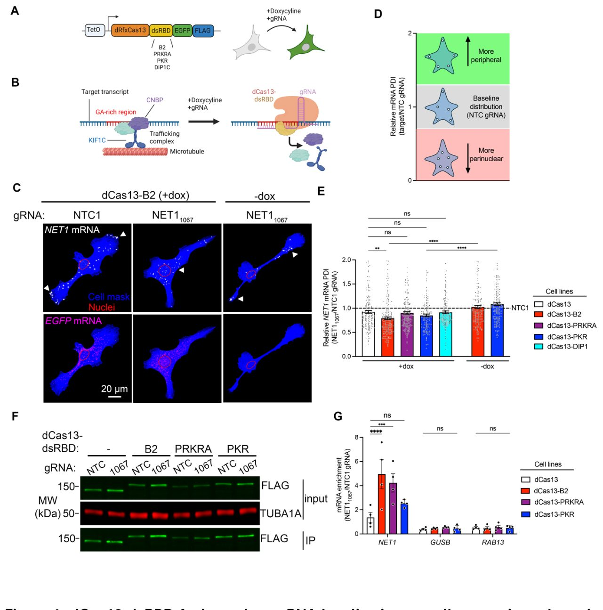
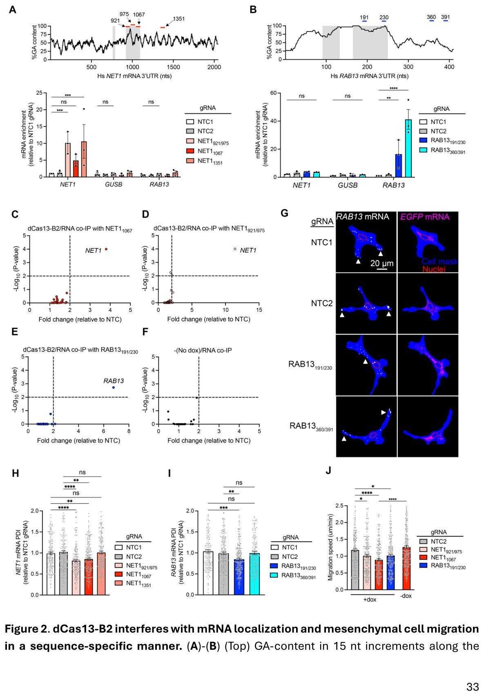
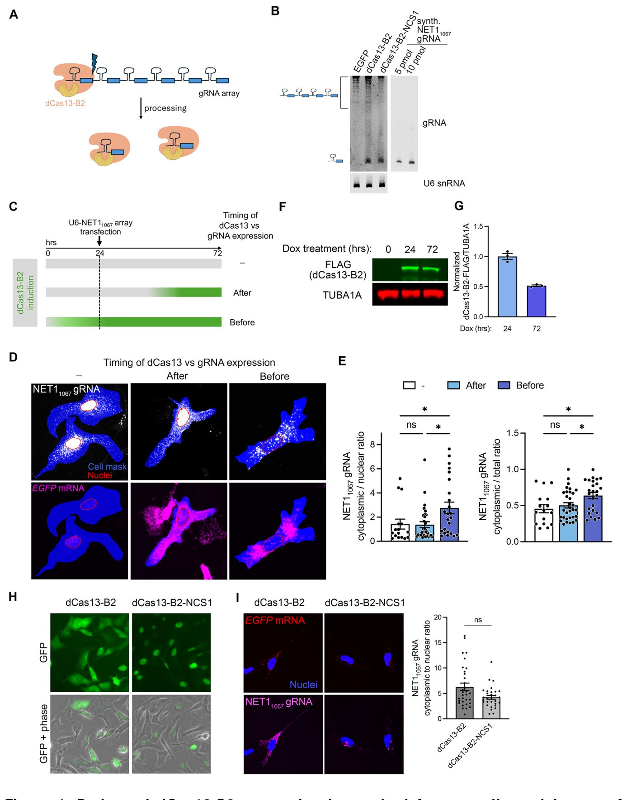
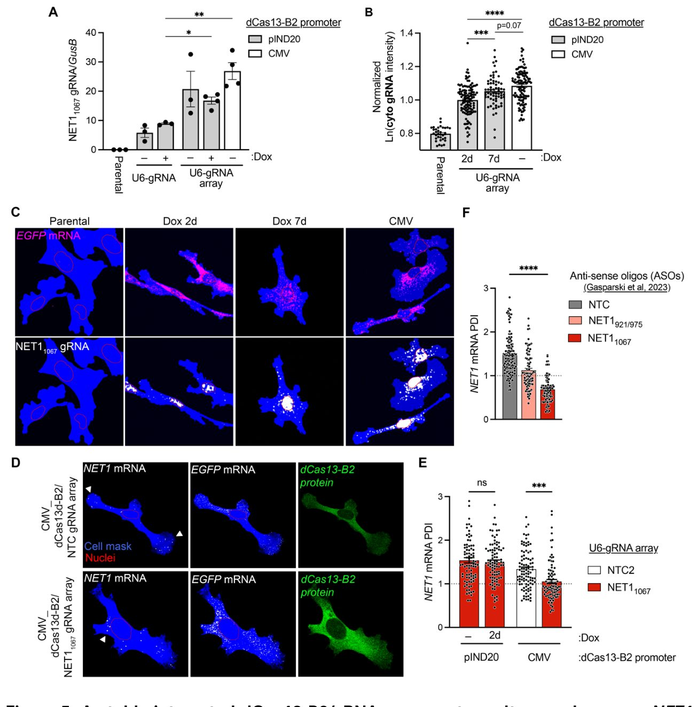
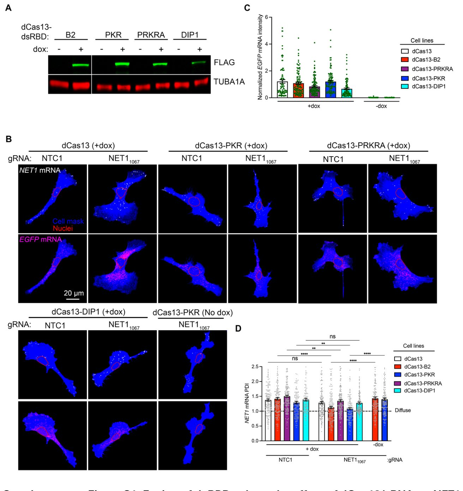
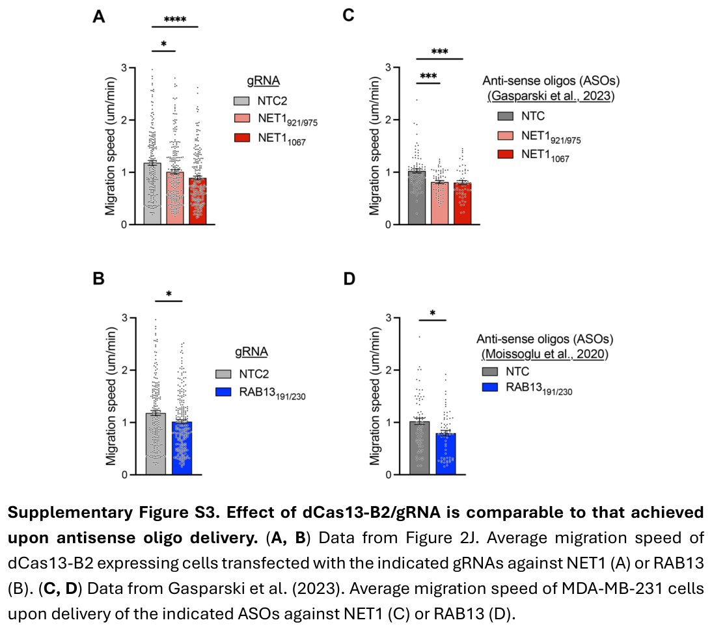
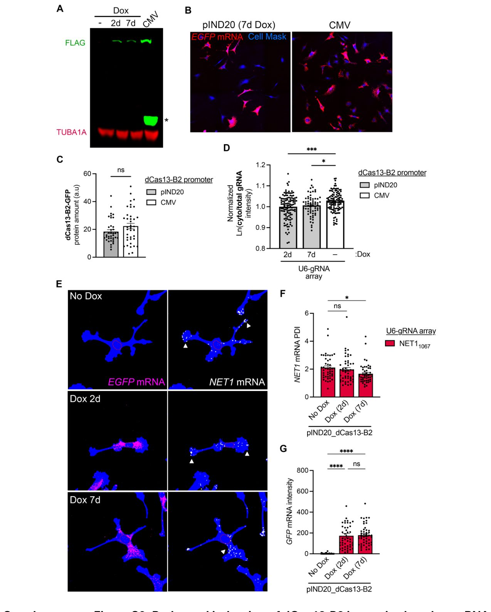
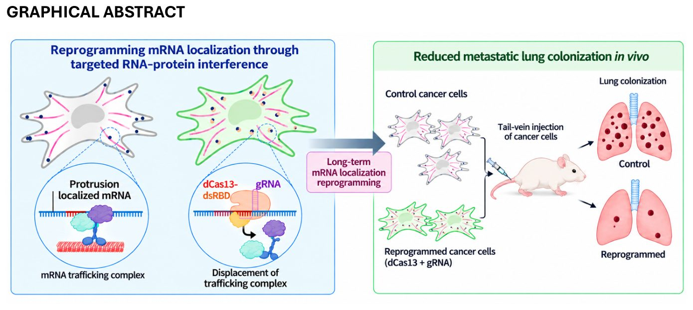
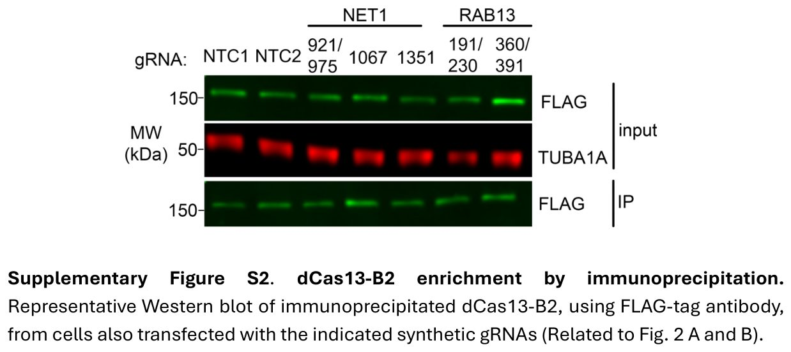

CRISPR yordamida mRNK migratsiyasini to'xtatish
{kind=link}

Hujayralar o'z faoliyatini boshqarish uchun o'ziga xos molekulyar marshrutlardan foydalanadi, rak esa ularni o'z manfaati uchun burib yuboradi. Ushbu jarayonga uzoq muddatli va aniq aralashish shu paytgacha qiyin edi. Tadqiqotchilar CRISPR tizimini moslashtirib, kerakli transport zanjirlarini sitoplazmaning o'zida to'xtatishga erishdilar. Bu DNKga zarar etkazmasdan hujayralar harakatini boshqarish yo'lini ochadi.
Asosiysi
- dCas13 sitoplazmada mRNK va CNBP bog'lanishiga to'sqinlik qiladi
- NET1 mRNK transportining buzilishi hujayralar harakatini kamaytiradi
- Usul tirik organizmlarda metastazlarni sezilarli darajada qisqartiradi
Batafsil
Hujayra ichidagi transport jarayonlari mRNK va maxsus oqsillar o'zaro ta'siriga asoslanadi. CNBP oqsili bunday tizimlarda asosiy elementlardan biri hisoblanadi. An'anaviy usullar qisqa muddatli ta'sir ko'rsatgani sababli uzoq aralashuvlar uchun mos kelmas edi. Mualliflar fermentativ faolligi yo'qotilgan dCas13 tizimidan foydalanib, mazkur bog'lanishlarni to'g'ridan-to'g'ri to'sib qo'yishdi.
Sut bezlari raqining MDA-MB-231 liniyalari va HEK293T hujayralarida o'tkazilgan tajribalar dCas13 va maxsus gvardiya RNKlarining barqaror ta'sirini ko'rsatdi. NET1 genining mRNK molekulyar marshrutini o'zgartirish orqali hujayralarning invazivligini kamaytirishga erishildi. Tajribalar shuni ko'rsatdiki, mRNK joylashishini o'zgartirish rak hujayralarining harakat tezligini pasaytiradi.
Tadqiqotning yakuniy bosqichida ushbu usul tirik organizmlarda sinab ko'rildi. Sichqonlar ustida olib borilgan tajribalar o'pka metastazlarini sezilarli darajada kamaytirish mumkinligini ko'rsatdi. Bu mRNK joylashishini maqsadli boshqarish kelajakda o'simta rivojlanishiga qarshi kurashishda muhim vosita bo'lishini bildiradi.
Cheklovlar
Ma'lumotlar asosan hujayra kulturalari va laboratoriya hayvonlari modellariga asoslangan bo'lib, qo'shimcha tekshiruvlarni talab qiladi.
Maqolaning to'liq tarjimasi
Annotatsiya
RNK-bog'lovchi oqsillar (RBP) RNKlar bilan murakkab ribonukleoprotein komplekslarida birikib, RNK hayotiy siklining turli jihatlarini va shu tariqa hujayra funksiyalarini boshqaradi. Ularning ahamiyatiga qaramay, muayyan RNK-RBP bog'lanish hodisalarining funksional hissasini, ayniqsa uzoq muddatli fenotipik tahlillarda aniqlash qiyinligicha qolmoqda. Bu yerda biz muayyan RNK-RBP o'zaro ta'siriga xalaqit berish uchun CRISPR/dCas13 spetsifikligidan foydalanamiz.
Biz ushbu metodologiyani GA ga boy mRNK lokalizatsiya elementlariga qo'llaymiz, ular CNBP RNK-bog'lovchi oqsilini jalb qiladi va mRNK tashish komplekslarini yig'ish uchun platforma bo'lib xizmat qiladi. Biz dCas13/gRNA maqsadli transkriptlarga yuqori spetsifiklik bilan birikishi va CNBP ning jalb qilinishiga xalaqit berishini ko'rsatamiz, bu esa maqsadli mRNK lokalizatsiyasi va hujayra harakatchanligining o'zgarishiga olib keladi, bu esa maqsadli mRNKlar funksiyasiga mos keladi.
Izoh
CRISPR/dCas13 tizimi RNKni kesmaydigan, balki gid-RNK yordamida unga aniq yo'naltiriladigan o'zgartirilgan Cas13 oqsilidan foydalanadi, bu esa RNKni parchalamasdan uning vazifalarini o'rganish imkonini beradi.
Biz ushbu tizimni barqaror joriy etish uchun optimallashtirish va mulohazalarni tavsiflaymiz. Bundan tashqari, biz undan tarkibida GA elementlari bo'lgan NET1 mRNK lokalizatsiyasini buzish saraton hujayralarining invazivligini va o'pkaning metastatik kolonizatsiyasini kamaytirishini ko'rsatish uchun foydalanamiz.
Muhim
CRISPR/dCas13 yordamida NET1 mRNK lokalizatsiyasining buzilishi in vivo eksperimentlarda saraton hujayralarining invazivligi va o'pka metastazlarini kamaytiradi.
Ushbu ma'lumotlar onkogen jarayonda mRNK lokalizatsiyasining potensial rolini ochib beradi va ushbu CRISPR asosidagi tizimdan in vivo sharoitida RNK-RBP o'zaro ta'sirining uzoq muddatli funksional tadqiqotlari uchun qanday foydalanish mumkinligini ko'rsatadi.
Ehtiyot bo'ling
Tadqiqot in vivo modellarida o'smaga qarshi ta'sirni ko'rsatadi, biroq bu natijalarni klinik amaliyotga o'tkazish qo'shimcha keng ko'lamli tekshiruvlarni talab qiladi.
Kirish
Gen eksprestsiyasining transkriptsiyadan keyingi regulyatsiyasi asosiy ravishda RNK-bog‘lovchi oqsillar (RBP) orqali amalga oshiriladi, ular nishon mRNKlardagi maxsus ketma-ketliklar yoki strukturaviy motivlar bilan dinamik tarzda o‘zaro ta’sirlashadi. RNK-RBP bog‘lanish hodisalari mRNK metabolizmining deyarli barcha jihatlariga, shu jumladan ishlov berish, barqarorlik, translyatsiya va lokalizatsiyaga ta’sir ko‘rsatadi. mRNK larning 3'-UTR qismlari ko‘pincha maxsus RBP larni jalb qiluvchi ko‘plab ketma-ketlik elementlarini o‘z ichiga oladi, ular hujayra proteomini shakllantirish uchun murakkab fazoviy-vaqtli regulyatsiyani muvofiqlashtiradi. Ushbu o‘zaro ta’sirlarning muhimligini ta’kidlagan holda, ularning buzilishi saraton kasalligi shu jumladan turli kasalliklar bilan bog‘liq. RBP bog‘lanish saytlarini transkriptom miqyosida xaritalashdagi so‘nggi yutuqlar ribonukleoprotein yigilishi va tashkil topishi haqidagi qarashlarimizni sezilarli darajada yaxshiladi.
Izoh
RBP (RNK-bog‘lovchi oqsillar) — mRNK molekulalariga birikib, ularning hujayradagi sintezidan tortib parchalanishigacha bo‘lgan taqdirini boshqaradigan molekulyar regulyatorlar.
Shunga qaramay, o‘ziga xos RNK-RBP o‘zaro ta’sirlarini o‘rganish va ularning individual funksional hissalarini tushunish asosan qiyinligicha qolmoqda. RBP larning kamayishini o‘z ichiga olgan odatiy yondashuvlar bilvosita ta’sir ko‘rsatishi mumkin, chunki bitta RBP bir nechta RNK larga bog‘lanishi mumkin va shuning uchun murakkab regulyator tarmoqqa ega. Boshqa tomondan, cis-regulyator RNK ketma-ketlik elementlarining aniq genetik yo‘q qilinishi yoki mutatsiyasi murakkab bo‘lishi, vaqtinchalik nazorat qilinishi qiyin bo‘lishi va qaytarilmas bo‘lishi mumkin, chunki u genomik DNK ketma-ketligini o‘zgartirishni o‘z ichiga oladi. Antisens oligonukleotidlaridan (ASO) foydalanadigan muqobil yondashuv o‘ziga xos RNK-RBP o‘zaro ta’sirlarini blokirovka qilish uchun moslashuvchan metodologiyani taklif qiladi.
Biroq, bo‘linuvchi hujayralardagi ASO ta’sirlari qisqa muddatli bo‘lib, ketma-ketlikka xos RNK-RBP buzilganda uzoq muddatli fenotipik oqibatlarni o‘rganishga imkon bermaydi. Yuqoridagi sabablar kasallikka aloqador modellar va vaqt oralig‘ida funksional tushunchalarga ega bo‘lish uchun ketma-ketlikka xos RNK-RBP o‘zaro ta’sirlarini tanlab buzishi mumkin bo‘lgan vositani ishlab chiqish zarurligini ta’kidlaydi. Effektor oqsilning minimal tabiati va ixcham tashkil etilishi tufayli 2-sinf CRISPR-Cas tizimlari nuklein kislotalarini boshqarish uchun muhim vositalar sifatida paydo bo‘ldi. VI turdagi CRISPR-Cas tizimlari, xususan RNKga yo‘naltirilgan CRISPR-Cas13 asosidagi tizimlar RNKni qayta ishlash, tahrirlash, lokalizatsiya qilish, shuningdek transkriptga xos proteom o‘zaro ta’sirlarini xaritalash kabi turli xil transkriptga xos ta’sirlarni boshqarish uchun dasturlashtiriladigan kalit sifatida keng qo‘llanilmoqda.
Ehtiyot bo'ling
Sichqonlar va hujayra liniyalarida o‘tkazilgan tajribalar asosiy mexanizmlarni aniqlashga yordam beradi, biroq regulyator tarmoqlardagi farqlar tufayli natijalarni inson patologiyalariga ekstrapolyatsiya qilishda ehtiyotkorlikni talab qiladi.
Ushbu yondashuvlar Cas oqsiliga biriktirilgan effektor ferment/omil nishon RNKga o‘z ta’sirini ko‘rsatadigan maxsus RNK hududlariga katalitik jihatdan nofaol dCas13/gRNA komplekslarini jalb qilish uchun yo‘naltiruvchi RNK (gRNA) ketma-ketligi o‘ziga xosligidan foydalanadi. Bu yerda biz o‘ziga xos RNK-RBP o‘zaro ta’sirlarini sterik raqobat qilishi va buzishi mumkin bo‘lgan genetik kodlangan ASO analogini ishlab chiqish uchun dCas13 ning RNKga yo‘naltirilish qobiliyatidan foydalanishga harakat qildik. Ushbu tizimni sinovdan o‘tkatish uchun biz uni mRNKning periferik hujayra o‘simtalariga tashilishini ta’minlaydigan GA ga boy 3'UTR elementlariga qo‘lladik. GA ga boy elementlar CNBP RNK-bog‘lovchi oqsini va KIF1C mikrotubulali motorini jalb qilish orqali RNK transport kompleksining shakllanishini boshqaradi.
Muhim
dCas13/gRNA tizimi CNBP ning GA elementlari bilan bog‘lanishini raqobatli ravishda bostiradi, bu esa ASO ta’sirini muvaffaqiyatli taqlid qilish va saraton hujayralarining invazivligini kamaytirish imkonini beradi.
GA ga boy elementlarga qarshi yo‘naltirilgan ASO lar mRNK-CNBP-KIF1C kompleksining shakllanishini buzadi va natijada mRNK tashilishini kamaytiradi, bu esa kamaygan migratsiya tezligi va invazivlikning hujayrali fenotiplariga olib keladi. Shuning uchun, GA ga boy elementlarga asoslangan mRNK regulyatsiyasi funksional aralashuv vositasi sifatida CRISPR-dCas13/gRNA samaradorligini baholash va standartlashtirish uchun biologik jihatdan mos muhitni taklif qiladi. Bu yerda biz nishon RNKga bog‘lanish kuchi, shuningdek sitoplazmatik gRNA miqdori dCas13/gRNA kompleksining RNK elementi funksiyasi bilan raqobatlashish qobiliyatini cheklashini aniqladik.
Biz GA ga bog‘liq mRNK lokalizatsiyasini buzuvchi to‘liq genetik kodlangan, barqaror ekspressiya qilinadigan CRISPR-dCas13/gRNA tizimini amalga oshirishga imkon beradigan optimizatsiyalarni tasvirlaymiz. Bu ta’sir CNBP bog‘lanishining raqobati bilan vositalanadi va hujayra xatti-harakatlarida keskin o‘zgarishlarga olib keladigan ASO asosidagi aralashuvlar bilan miqyosda taqqoslanadi. Biz ushbu vositani uzoq muddatli funksional tadqiqotlar bilan birlashtirib, tarkibida GA bo‘lgan NET1 mRNKining noto‘g‘ri nishonga o‘rnatilishi in vitro sharoitida saraton sferoidlari invazivligining pasayishiga va sichqonlarda o‘pkaning metastatik kolonizatsiyasining kamayishiga olib kelishini ko‘rsatdik. Ushbu ish o‘zlarining uzoq muddatli funksional hissalarini tushunish sari zarur qadamni ta’minlab, o‘ziga xos RNK-RBP o‘zaro ta’sirlarining tanlab va boshqariladigan aralashuvi uchun CRISPR-Cas vositalarining o‘ziga xosligidan foydalanishning yangi strategiyasini tasvirlaydi.
Natijalar
dCas13-dsRBD birikmalari dCas13-mRNK bog'lanishini kuchaytiradi va GA ga boy RKN elementining funksiyasiga xalaqit beradi
CRISPR-dCas13 ning RBP-RKN o'zaro ta'siriga xalaqit berish qobiliyatini baholash uchun biz doksisiklin ta'sirida induksiya qilinadigan promotor ostida katalitik jihatdan nofaol RfxCas13d oqsilini (dRfxCas13d; bundan buyon dCas13 deb yuritiladi) barqaror ravishda ekspressiya qildik. dCas13 biokimyoviy tozalash va tavsiflash uchun C-uchidagi eGFP va FLAG teglariga biriktirilgan (1A-rasm). Qo'shimcha ravishda, dCas13/gRKN ning nishon mRNKga bog'lanishini kuchaytirish uchun ikki zanjirli RKNni bog'lovchi domen (dsRBD) kiritildi [21]. Biz ikki zanjirli RKNga turlicha yaqinlikka ega bo'lgan turli oqsillarning (PKR, PRKRA, DIP1, B2) dsRBD domenlaridan foydalandik (1A-rasm) [33-36]. Doksisiklin yordamida induksiya qilinadigan dCas13-dsRBD ekspressiya kassetalari MDA-MB-231 hujayralariga barqaror ravishda integratsiya qilindi. Transgen induksiyasi liniyalar orasida o'xshash ekspressiya darajalariga olib keldi, faqatgina dCas13-DIP1 bundan mustasno bo'lib, u doimiy ravishda pastroq umumiy ekspressiyani ko'rsatdi (S1A-rasm).
Izoh
dCas13-dsRBD — bu maqsadli RKN molekulasiga yanada mustahkamroq yopishish uchun «soqov» dCas13 fermentiga dsRBD oqsil domeni qo'shilgan modifikatsiyalangan CRISPR tizimi.
_dCas13_ ni ma'lum mRNK larga yo'naltirish uchun biz doksisiklin bilan induksiya qilingan hujayralarga sintetik yo'naltiruvchi RKN larni (gRKN) transfeksiya qildik. gRKN lar mRNK regulyatsiyasida qatnashadigan 3'UTR ketma-ketliklarini nishonga olish uchun yoki inson transkriptomida mavjud bo'lmagan ketma-ketliklarga qarshi (Nishonga olmaydigan nazorat gRKN lari — NTC1, NTC2) loyihalashtirilgan. dCas13-dsRBD birikmalari RBP-RKN o'zaro ta'siriga funksional ravishda xalaqit bera olishini aniqlash uchun biz CNBP RKNni bog'lovchi oqsili va KIF1C mikrotubula motorini jalb qilish orqali RKN ning hujayra periferiyasiga tashilishini rag'batlantiradigan GA ga boy elementlarga e'tibor qaratdik (1B-rasm) [25, 26]. NET1 yoki RAB13 mRNKlaridagi GA ga boy hududlarga qarshi antismens oliqonukleotidlar (ASO) CNBP bog'lanishining oldini oladi, bu esa nishonga olingan mRNKlaming yadro atrofida ko'proq taqsimlanishiga va hujayra migratsiyasining funksional buzilishiga olib keladi [12, 13, 26, 28].
CRISPR-dCas13 shunga o'xshash tarzda CNBP ga bog'liq tashishga xalaqit bera olishini baholash uchun biz NET1 mRNKning GA ga boy hududiga gRKN loyihalashtirdik (NET11067 gRKN). Endogen NET1 mRNK taqsimoti in situ floresan gibridizatsiyasi (FISH) yordamida transkriptlarni vizualizatsiya qilish orqali tahlil qilindi (1C-rasm va S1B-rasm). dCas13-dsRBD ekspressiyasidagi o'zgaruvchanlikni nazorat qilish uchun biz GFP RKN miqdori taqqoslanadigan hujayralarni tanladik (1C-rasm va S1B, C-rasm). NET1 mRNK taqsimoti oldin tavsiflangan periferik taqsimot indeksini (PDI) o'lchash orqali miqdoriy jihatdan aniqlandi [31]. PDI qiymatlari faraziy to'liq diffuz RKN ga nisbatan normallashtiriladi (PDI=1), shuning uchun yuqori PDI qiymatlari RKN ning periferikroq taqsimlanganini ko'rsatadi, pastroq qiymatlar esa yadro atrofidagi moyillikni bildiradi. S1D-rasmda xom NET1 mRNK PDI qiymatlari ko'rsatilgan. NET1 mRNK basal PDI qiymatida ba'zi o'zgaruvchanlik hatto nazorat sharoitlarida ham kuzatiladi (S1D-rasm, NTC1 gRKN namunalariga qarang), bu ko'pincha turli dCas13-dsRBD birikmalarining barqaror ekspressiyasidan kelib chiqadigan hujayra liniyasiga xos o'zgarishlar bilan bog'liq.
Ehtiyot bo'ling
Turli hujayra liniyalarida basal PDI qiymatlarining o'zgarib turishi konstruksiyalarning barqaror ekspressiyasi fon effektini ko'rsatadi, shuning uchun nazorat namunalariga qat'iy normallashtirish talab etildi.
Har bir dCas13-dsRBD liniyasida NET11067 gRKN ning o'ziga xos ta'sirini ta'kidlash uchun NET1 PDI qiymatlari NTC1 gRKN yetkazib berilgandagi qiymatlarga normallashtirildi (1D va 1E-rasm). Qizig'i shundaki, dsRBD bo'lmaganda, dCas13/NET11067 gRKN NET1 taqsimotini sezilarli darajada o'zgartirmadi (1E-rasm va S1D-rasm, dCas13 yo'laklari). Buning o'rniga, dCas13-dsRBD birikmalari, dCas13-DIP1 bundan mustasno, NET1 lokalizatsiyasini sezilarli darajada buzdi (S1D-rasm). B2 dsRBD lokalizatsiyaga eng yaqqol ta'sir ko'rsatdi va o'zgartirilmagan dCas13 ga nisbatan lokalizatsiyani sezilarli darajada buzgan yagona dsRBD bo'ldi (1E-rasm). Bu ta'sir faqat gRKN transfeksiyasining o'ziga bog'liqligini istisno qilish uchun biz NET11067 gRKN bilan transfeksiya qilingan, ammo doksisiklin bilan induksiya qilinmagan dCas13-B2 va dCas13-PKR hujayra liniyalarida NET1 PDI ni o'lchadik. Bu sharoitlarda NET1 PDI o'zgarmas bo'lib qoldi, bu esa ushbu ta'sir dCas13 ekspressiyasiga bog'liqligini ko'rsatadi (1E-rasm va S1D-rasm, -dox yo'laklari). Shuning uchun, dCas13 ning dsRBD bilan birikishi uning GA ga boy RKN elementining funksiyasiga xalaqit berish qobiliyatini kuchaytiradi.
Muhim
dCas13 ning B2 dsRBD oqsil domeni bilan birikishi NET1 mRNK periferik lokalizatsiyasini sezilarli darajada buzadi (doksisiklin induksiyasiga bog'liq holda), dsRBD siz toza dCas13 esa bunday ta'sir ko'rsatmaydi.
Biz dCas13-dsRBD birikmalarining NET1 lokalizatsiyasiga xalaqit berish qobiliyatining oshishi ularning nishon mRNK bilan barqaror bog'lanishidan kelib chiqadi deb faraz qildik. Buni sinab ko'rish uchun biz dCas13 ni barqaror bog'langan RKN lar bilan birgalikda immunopresipitatsiya qildik. NTC yoki NET11067 gRKN lar mavjudligida dCas13 birikmalarini immunopresipitatsiya qilish uchun anti-FLAG tegi antikorlaridan foydalanildi, shundan so'ng ddPCR yordamida endogen mRNKlar aniqlandi (1F va 1G-rasm). Haqiqatan ham, dsRBD birikmalari yolg'iz dCas13 bilan solishtirganda nishon NET1 mRNKning yuqoriroq boyishini ko'rsatdi. B2 dsRBD yuqoriroq boyishni ko'rsatdi, bu uning yuqorida ko'rsatilgan NET1 mRNK lokalizatsiyasiga kuchliroq ta'siriga mos keladi. Qolaversa, boshqa nishonga olinmagan mRNKlar (GUSB, RAB13) sezilarli darajada boyimadi (1G-rasm), bu dCas13 birikmalari faqat gRKN nishonga olgan transkript bilan bog'lanishini ko'rsatadi. Biz shunday xulosaga kelamizki, sinovdan o'tgan dsRBD lar orasida B2 dsRBD dCas13/gRKN ning nishon mRNK bilan assotsiatsiyasini barqarorlashtirish va nishonga olingan ketma-ketlikka funksional ravishda xalaqit berish uchun optimal usulni taklif qiladi. Shuning uchun biz qo'shimcha tavsiflash uchun dCas13-B2 ni tanladik.
dCas13-B2 nishondan tashqari bog'lanishni minimallashtirgan holda ketma-ketlikka o'ziga xos tarzda RNK elementining funksiyasiga xalaqit beradi
dCas13-B2 funksional RNK elementlari bilan keng miqyosda bog'lana olishi va ularning ishiga xalaqit bera olishini baholash uchun biz NET1 va RAB13 3'UTR tarkibidagi turli hududlarga yo'naltirilgan gRNA'larni loyihalashtirdik (2A va B-rasm). NET1921 va NET1975 gRNA'lari NET1 3'UTR doirasidagi GA ga boy hududga qaratilgan bo'lib, bu hudud NET11067 gRNA mo'ljallangan hudud kabi NET1 ning periferik lokalizatsiyasi uchun funksional jihatdan muhim ekanligi ko'rsatilgan. Boshqa tomondan, NET11351 gRNA NET1 trafigiga jalb etilmagan hududga qaratilgan. Xuddi shunday, RAB13191 va RAB13230 gRNA'lari RAB13 lokalizatsiyasi uchun muhim bo'lgan GA ga boy hududga qaratilgan, RAB13360 va RAB13391 gRNA'lari esa funksional bo'lmagan UTR hududiga qaratilgan [13]. Ushbu gRNA'larning dCas13-B2 ni ma'lum mRNK'larga yo'naltirish qobiliyati ko-immunopresipitatsiya eksperimentlarida, so'ngra ddPCR yordamida aniqlash usulida baholandi (S2-rasm). Darhaqiqat, barcha NET1 gRNA'lari dCas13-B2 IP'larida NET1 mRNK'sining sezilarli darajada boyishiga olib keldi, maqsadga qaratilmagan transkriptlar (GUSB, RAB13) эsa sezilarli darajada boyimadi (2A-rasm). Aksincha, RAB13 gRNA'lari RAB13 ning boyishiga olib keldi, lekin NET1 yoki GUSB mRNK'larini boyitmadi (2B-rasm).
Muhim
dCas13-B2 va gRNA majmualari maqsadli NET1 va RAB13 mRNK'larini o'ziga xos tarzda bog'lab, boshqa transkriptlarni tutib olmasdan immunopresipitatsiyada ularni boyitadi.
Izoh
ddPCR (tomchili raqamli PZR) — namunalarni minglab tomchilarga ajratish orqali nuklein kislotalarni mutlaq miqdoriy aniqlashning yuqori aniqlikdagi usuli.
dCas13 va nishon bo'lmagan mRNK'lar orasidagi noaniq o'zaro ta'sirlar ilgari tasvirlangan bo'lib, ular ko'pincha, lekin faqatgina emas, gRNA ketma-ketligi bilan bog'liq [37]. dCas13-B2 ning nishonga olish o'ziga xosligini yanada baholash uchun biz quyidagilarni o'z ichiga olgan nanoString nCounter panellarini ishlab chiqdik: a) qisman komplementarlikka asoslangan har bir gRNA'ning potensial nishondan tashqari transkriptlari; b) ilgari tasvirlangan Cas13d nishondan tashqari nishonlari [37]; va c) NET1 va RAB13 kabi GA ga boy hududlarga ega bo'lgan va KIF1C yordamida hujayra o'simtalariga tashiydigan qo'shimcha mRNK'lar (to'liq ro'yxat uchun S3-jadvalga qarang). Muhimi shundaki, dCas13-B2 ko-immunopresipitatsiya namunalarida sezilarli darajada boyigan yagona mRNK'lar har bir gRNA'ning nishonlari bo'ldi (2C-E-rasm; ahamlilik chegarasi > 2 martadan ortiq boyish va p ≤ 0.01; Boshlang'ich ma'lumotlar S3-jadvalda keltirilgan), boshqa barcha RNK'lar esa dCas13-B2 induksiyasi bo'lmagan holatdagiga o'xshash fon darajalarida aniqlandi (2F-rasm). Shuning uchun dCas13-B2 minimal darajada nishondan tashqari bog'lanishni namoyish etadi.
dCas13-B2 ning NET1 va RAB13 UTR'lariga bog'lanishi ushbu mRNK'lar trafigiga ta'sir qilishini aniqlash uchun biz tegishli mRNK taqsimotini vizualizatsiya qilish va miqdorini aniqlash uchun FISH'dan foydalandik (2G-I-rasm). Yuqorida ko'rsatilganidek, barcha dCas13-B2/gRNA'lar NET1 yoki RAB13 mRNK'siga bog'lana olishiga qaramay, faqat funksional jihatdan muhim GA ga boy hududlarga (NET1921/975, NET11067 va RAB13191/230) qaratilgan gRNA'lar mRNK trafigining buzilishini ko'rsatuvchi PDI ning sezilarli darajada kamayishiga olib keldi (2H va I-rasm). NET1 va RAB13 periferik lokalizatsiyasining kamayishining oqibati hujayra migratsiyasining buzilishi va hujayra harakati tezligining pasayishidir [12,13,27]. Bunga mos ravishda, dCas13-B2 ning NET1 va RAB13 GA ga boy hududlariga bog'lanishi natijasida RNK trafigining kamayishi tasodifiy hujayra migratsiyasi tezligining pasayishi bilan birga kechdi (2J-rasm).
Ehtiyot bo'ling
Tajribalar in vitro hujayra liniyalarida o'tkazilgan, shuning uchun tirik organizmdagi to'qima yoki organizm darajasidagi mRNK trafigiga ta'sir darajasi qo'shimcha tasdiqlashni talab qiladi.
Kuzatilgan kamayish tegishli mRNK'lar trafigini buzish uchun ASO'lardan foydalangan holda ilgari xabar qilingan natijalar bilan taqqoslanadigan darajada edi (S3-rasm). Shuning uchun dCas13-B2 yuqori darajada ketma-ketlikka o'ziga xos tarzda bog'lanadi va hujayra xatti-harakatlarini o'zgartirish uchun yetarli darajada RNK elementlarining funksiyasiga ta'sir qiladi.
GA ga boy elementga dCas13-B2 ning yo'naltirilishi CNBP rekruitmentiga xalaqit beradi
dCas13-B2 barqaror ravishda bog'lana olishi va mRNK trafigini funksional ravishda o'zgartira olishini hisobga olib, biz dCas13-B2/gRNA majmualari RBP ning GA ga boy elementlarga bog'lanishi bilan raqobatlashish orqali ishlashini taxmin qildik (1B-rasm). Ushbu bashoratni bevosita sinab ko'rish uchun biz dCas13-B2 ning RAB13 miltiqli transkriptlariga CNBP bog'lanishi bilan raqobatlashishini baholash uchun tozalangan komponentlardan foydalanadigan in vitro tizimiga murojaat qildik (1B-rasm). Ushbu tizimda RAB13 3'UTR ga mos keladigan in vitro transkripsiya qilingan RNK fragmenti o'zining 3' uchida λ bakteriofagining BoxB shpilkasini o'z ichiga oladigan qilib loyihalashtirilgan. BoxB ketma-ketligi λN oqsili peptidi tomonidan tan olinadi, u GST bilan birlashtirilganda glyutation burunlarida RNK va har qanday bog'langan omillarni cho'ktirish (pulldown) imkonini beradi (3A-rasm).
Muhim
dCas13-B2/gRNA majmualari in vitro sharoitida maqsadli RNK bilan CNBP assotsiatsiyasini kamaytirgan holda, RAB13 3'UTR dagi GA ga boy hududga CNBP oqsilining bog'lanishi bilan raqobatlashadi.
Izoh
GST-pulldown — eritmadagi oqsillar va ularning o'zaro ta'sir sheriklarini ajratib olish uchun glyutation-transferazadan foydalanadigan affin cho'ktirish usuli.
Avvalo, biz bakteriyalarda ifodalangan va tozalangan CNBP 0,9 µM apparent K_d bilan RAB13 3' UTR ga bog'langanligini tasdiqladik (S4A va B-rasm). RNK dagi GA ga boy hududning yo'q qilinishi CNBP bog'lanishini kamaytirdi (S4A-rasm). Ushbu natijalar CNBP ning in vivo sharoitida RAB13 RNK bilan bevosita o'zaro ta'siri haqida ilgari xabar qilingan ma'lumotlarga va GA ga boy hududning CNBP bog'lanishini rag'batlantirishdagi roliga mos keladi [26]. Bundan tashqari, kuzatilgan K_d boshqa yondashuvlar va RNK substratlari yordamida CNBP uchun ilgari xabar qilingan qiymatlar oralig'ida joylashgan [32,38]. dCas13-B2/gRNA majmualarini ajratib olish uchun oqsil HEK293 hujayralarida vaqtincha transfeksiya qilish yo'q bilan ishlab chiqarildi, anti-FLAG antitelali burunlarda immunopresipitatsiya qilindi va sintetik gRNA bilan yuklandi. Erkin gRNA olib tashlandi va dCas13-B2/gRNA majmualari ortiqcha FLAG peptidi yordamida elutsiya qilindi, bu ularning sezilarli darajada boyishiga olib keldi (3B va C-rasm; S4C-rasm).
Keyin biz dCas13-B2 CNBP ning RAB13 3'UTR ga bog'lanishiga qanday ta'sir qilishini baholadik. Shuni ta'kidlaymizki, reaksiyaga qo'shishimiz mumkin bo'lgan dCas13 ning maksimal miqdori CNBP ga nisbatan substehiometrik edi (S4C-rasm). Shunga qaramay, cheklangan miqdorga qaramasdan, dCas13/RAB13191/230 majmualari CNBP ning maqsadli RNK bilan assotsiatsiyasini sezilarli darajada kamaytirdi (3D va E-rasm), shu bilan birga RNK va dCas13-B2 o'rtasidagi assotsiatsiyani oshirdi (3D, F-rasm va S4D-rasm). Ushbu natijalar dCas13-B2/gRNA majmualari RNK nishonida RBP rekruitmenti bilan raqobatlashishi mumkin degan tushunchani qo'llab-quvvatlaydi. Biz dCas13-B2 maxsus RNK-RBP o'zaro ta'sirlarini manipulyatsiya qilish va RNK elementlarining funksional hissalarini o'rganish uchun samarali, o'ziga xos va ko'p qirrali vosita sifatida ishlatilishi mumkinligini taklif qilamiz.
Yadroda ushlab turilishi va ekspresiya darajalari U6 boshqaruvidagi gRNA larning samaradorligini cheklaydi
Bizning shu paytgacha bo'lgan tadqiqotlarimiz kimyoviy sintez qilingan gRNA larni hujayralarga transfeksiya qilishga asoslangan edi. Biroq, bu yondashuv ASO yetkazib berish bilan bir xil cheklovlarga ega (ya'ni bo'linuvchi hujayralar yoki to'qimalarda uzoq muddatli ta'sirlarni baholay olmaslik va tartibsiz qamrab olish; Kirish qismiga qarang). CRISPR-dCas13 yaxshilangan ASO muqobilini ta'minlashi uchun barcha kerakli komponentlar (ya'ni dCas13, shuningdek gRNA) genetik jihatdan kodlangan va barqaror tarzda ekspresiya qilinishi kerak. Shuning uchun biz dox-induktiv dCas13-B2 ni ekspresiya qiluvchi hujayralarda gRNA ekspresiya kassetasini (inson U6 promotoridan foydalangan holda; U6-gRNA) barqaror integratsiya qilish uchun lentiviral transduksiyadan foydalandik. Dox induksiyasi tahlildan 48 soat oldin boshlandi.
Biroq, transfeksiya qilingan gRNA dan farqli o'laroq, biz U6 boshqaruvidagi NET11067 gRNA NET1 mRNK lokalizatsiyasiga sezilarli ta'sir ko'rsatmasligini aniqladik (S5A-rasm), bu nazorat hujayralarnikiga (U6-NTC1 gRNA ni ekspresiya qiluvchi) o'xshash bo'lib qoldi. Infeksiya ko'pligini (MOI) 10 barobar oshirganda ham hech qanday ta'sir aniqlanmadi (S5A-rasm).
Muhim
U6 promotoridan boshqariladigan gRNA lar juda past ekspresiya darajasini ko'rsatadi va yadroda ushlab turiladi, bu esa CRISPR-dCas13 yordamida sitoplazmatik RBP-mRNK o'zaro ta'sirini samarali ravishda to'xtatishga to'sqinlik qiladi.
Biz gRNA ning dCas13-B2 ning nishon RNKga birikishini yo'naltirish va RBP jalb qilinishi bilan raqobatlashish qobiliyati asosan gRNA miqdoriga bog'liq deb taxmin qildik. Bundan tashqari, biz o'rganayotgan RNK lokalizatsiyasini tartibga solish sitoplazmada sodir bo'lishini hisobga olsak, gRNA ning sitoplazmada mavjudligi ham cheklovchi omil bo'lishi mumkin. Shuning uchun biz gRNA miqdorini baholash uchun ddPCR va gRNA taqsimotini vizualizatsiya qilish uchun RNAscope Plus smRNA tahlilidan foydalandik.
Izoh
ddPCR (tomchili raqamli ПЦР) — standart egri chiziqlarsiz DNK yoki RNK molekulalarining mutlaq miqdorini aniq o'lchaydigan yuqori aniqlikdagi usul.
U6 boshqaruvidagi gRNA larni (NTC1 yoki NET11067) ekspresiya qiluvchi hujayra liniyalari sintetik gRNA transfeksiyasi paytida aniqlangan miqdorga nisbatan bir necha barobar past gRNA miqdorini ko'rsatdi (S5B va C-rasm). Yuqori MOI faqat biroz o'sishga olib keldi, bu tezda platoga chiqdi (S5B va C-rasm).
gRNA ni in situ vizualizatsiya qilish uchun biz U6-NET11067 gRNA ga qarshi smRNA zondlarini loyihalashtirdik. O'ziga xos signal barqaror ekspresiya qiluvchi hujayralarda osonlikcha aniqlandi, lekin ota-ona hujayra populyatsiyasida yo'q edi (S5D-rasm). Qizig'i shundaki, signal asosan yadroda aniqlandi, bu ekspresiya qilingan gRNA sitoplazmaga samarali eksport qilinmaganligini ko'rsatdi (S5D-rasm).
Umuman olganda, U6 boshqaruvidagi gRNA larning yetarli darajada sitoplazmatik to'planmagani va past ekspresiya darajalari CRISPR-dCas13 ning sitoplazmatik RBP-RNK o'zaro ta'siriga funksional ravishda aralashish qobiliyatini cheklashi ko'rinib turardi. gRNA miqdorini oshirish uchun biz U6 promotor direktqari takrorlanishlar bilan ajratilgan 8-10 ta gRNA ketma-ketligini o'z ichiga olgan kashshof transkripsiyasini boshqaradigan gRNA massivini ekspresiya qildik. Alohida gRNA lar Cas13 ning katalitik faolligi tufayli bunday massivlardan ajralib chiqishi mumkin (4A-rasm).
Muhimi shundaki, HEPN domenidagi mutatsiyalar tufayli mRNKni parchalovchi dCas13 varianti gRNA massivini qayta ishlash faolligini saqlab qoladi [29]. Bunga mos ravishda, Northern blot tahlili dCas13-B2 U6-gRNA massivlarini yetuk gRNA larga aylantira olishini ko'rsatdi (4B-rasm). Shunga qaramay, gRNA ni in situ aniqlash shuni ko'rsatdiki, gRNA ning sezilarli miqdori hali ham yadroda qolib ketmoqda.
Xususan, U6-gRNA massiv kassetasi hujayralarga yetkazib berilgandan so'ng dCas13-B2 ekspresiyasi induksiya qilinganida (4C-rasm, "Keyin"), gruv signalining deyarli yarmi yadroda mavjud edi (4D va E-rasm). Qizig'i shundaki, bu gRNA taqsimoti dCas13-B2 umuman induksiya qilinmagan paytdagiga o'xshash edi (4D va E-rasm). Biz gRNA taqsimotini o'zgartirish uchun gRNA massivi ekspresiyasidan oldin dCas13-B2 ekspresiyasi kerak bo'ladi deb taxmin qildik.
Ehtiyot bo'ling
Tavsiflangan tajribalar in vitro hujayra liniyalarida o'tkazilgan; gRNA ning vektor orqali yetkazib berilishi va hujayra ichidagi transporti tirik organizm to'qimalarida sezilarli darajada farq qilishi mumkin.
Buni sinab ko'rish uchun dCas13 ekspresiyasi U6-gRNA massiv kassetasini transfeksiya qilishdan oldin induksiya qilindi (4C-rasm, "Oldin"). Qizig'i shundaki, bu sitoplazmatik gRNA ning sezilarli darajada oshishiga va yadro gRNA ning kamayishiga olib keldi (4D va E-rasm). Bu ta'sir dCas13-B2 ning yuqori ekspresiyasi bilan bog'liq emas edi, chunki dCas13-B2 ekspresiyasi 48 soatda cho'qqiga chiqadi (4F va G-rasm).
gRNA ning sitoplazmatik mavjudligining aniq mexanik asosi haqida yakuniy xulosaga kela olmasak-da, bu ma'lumotlar dCas13-B2 ekspresiyasining vaqti yoki davomiyligi muhimligini ko'rsatdi. dCas13 ning qisqa muddatli ekspresiyasi sitoplazmada sodir bo'ladigan RBP-RNK o'zaro ta'siriga aralashish uchun talab qilinadigan element bo'lgan yuqori miqdordagi sitoplazmatik gRNA ga erishish uchun maqbul emas.
Biz shuningdek yadro bo'linmasida dCas13-B2 mavjudligini oshirish gRNA taqsimotiga ta'sir qilishini o'rganib chiqdik [39]. Buning uchun oqsil qo'shimcha ravishda ikkita SV40 yadro lokalizatsiya signali va leytsinga boy yadro eksport signalidan iborat yadro-sitoplazmatik tashish (NCS1) moduli bilan biriktirildi [39]. Kutilganidek, dCas13-B2-NCS1 oqsili aniqroq yadro to'planishini ko'rsatdi (4H-rasm) va shuningdek gRNA massivlarini qayta ishlashga qodir edi (4B-rasm). Shunga qaramay, u yadro-sitoplazmatik gRNA taqsimotini yanada yaxshilamadi (4I-rasm). Shuning uchun biz qo'shimcha tashish signallarini kiritmasdan dCas13-B2 fiziyasini davom ettirdik.
Genetik kodlangan CRISPR-dCas13 tizimining barqaror ekspressiyasi GA-elementiga bog'liq mRNA tashilishiga xalaqit beradi
Yuqoridagi ma'lumotlarga tayanib, biz gRNA massivlarini (NTC1 yoki NET11067 gRNA o'z ichiga olgan) doimiy ravishda dCas13-B2 eksprimerlovchi hujayralarga (CMV_dCas13-B2) yoki dCas13-B2 induksiyalanuvchi hujayralarga (pIND20_dCas13-B2) barqaror ravishda kiritdik. Oxirgi holatda dCas13-B2 ekspressiyasi tahlildan oldin 2 yoki 7 kun davomida induksiya qilindi. Ekspreslangan gRNA miqdori barcha hollarda o'xshash bo'lib, bitta U6-gRNA kassetasi yordamida erishilgan miqdordan yuqori edi (5A-rasm), bu U6-gRNA massivlari gRNA hosil bo'lishini kuchaytirishini tasdiqlaydi.
Izoh
gRNA (gidlovchi RNK) — bu CRISPR kompleksini genoma yoki transkriptning kerakli joyiga yo'naltiruvchi RNK molekulasi.
Induktsiyalanuvchi dCas13-B2 ekspressiyasi allaqachon 2 kundan so'ng plato hosil qildi (S6A-rasm) va ko'proq bir xil ekspressiyani ko'rsatgan CMV_dCas13-B2 eksprimerlovchi hujayralardan farqli o'laroq, faqat hujayralarning bir qismida kuzatildi (S6B-rasm). Shunga qaramay, alohida GFP-musbat hujayralar o'xshash miqdordagi dCas13-B2-GFP ekspressiyasini ko'rsatdi (S6C-rasm). Qizig'i shundaki, CMV_dCas13-B2 hujayralari sitoplazmada Dox bilan induksiya qilingan dCas13-B2 hujayralariga nisbatan sezilarli darajada yuqori gRNA miqdorini ko'rsatdi (5B va C-rasm). Bu farq shunchaki umumiy gRNA miqdoridagi umumiy farqlar bilan bog'liq emas edi, chunki umumiy gRNA ga nisbatan normallashtirish ham shunga o'xshash tendentsiyalarni ko'rsatdi (S6D-rasm).
Ehtiyot bo'ling
Kuzatilgan effektlar in vitro hujayra liniyalarida olingan; tirik organizmda ahamiyatini tasdiqlash uchun qo'shimcha modellar talab qilinadi.
Ushbu natijalar dCas13 ning qisqa muddatli ekspressiyasi sitoplazmatik gRNA ning yuqori miqdoriga erishish uchun optimal emasligi haqidagi fikrga mos keladi. Darhaqiqat, dCas13-B2 ni 7 kun davomida uzoq muddatli induksiya qilish sitoplazmatik gRNA darajasini oshirdi, garchi doimiy eksprimerlovchi hujayralardagidek yuqori darajada bo'lmasa ham (5B-rasm va S6D-rasm).
Muhim
dCas13-B2 ning doimiy ekspressiyasi va 7 kunlik uzoq muddatli induksiyasi nishonlarni samarali bostirish uchun sitoplazmada yetarli miqdordagi gRNA to'planishini ta'minlaydi.
Sitoplazmatik gRNA miqdoridagi bu farqlar dCas13-B2 ning GA-elementiga bog'liq mRNA nishonga olish bilan raqobatlashish samaradorligiga ta'sir qilishini baholash uchun biz NET1 mRNA lokalizatsiyasini o'lchadik. Sitoplazmatik gRNA miqdoriga muvofiq, dCas13-B2 ning 2 kunlik qisqa muddatli induksiyasi NET1 mRNA lokalizatsiyasiga sezilarli ta'sir ko'rsatmadi (5E-rasm), doimiy ekspressiya esa periferik NET1 mRNA lokalizatsiyasining sezilarli darajada pasayishiga olib keldi (5D va E-rasm).
NET11067 gRNA eksprimerlovchi va dCas13-B2 ni doimiy ravishda eksprimerlovchi hujayralarda NET1 mRNA noto'g'ri lokalizatsiyasining darajasi sintetik gRNA yetkazib berilganda kuzatilgan darajaga o'xshash edi (5E-rasmni S5A-rasm bilan solishtiring) va ilgari xabar qilingan ASO vositasidagi effektlarga o'xshash edi (5F-rasm). Uzaytirilgan, 7 kunlik induksiya sezilarli, ammo unchalik kuchli bo'lmagan ta'sirga olib keldi (S6E-G-rasm).
NET1 mRNA tashilishining oldini olish saraton hujayralari invaziyasi va o'pkaning metastatik kolonizatsiyasini kamaytiradi
Ushbu tizim hujayra stress yo'llarini faollashtirmasligiga ishonch hosil qilish uchun biz ota-ona va dCas13-B2 liniyalarini taqqosladik. E'tiborlisi, bazal sharoitlarda ham, natriy arsenit bilan ishlov berilgandan keyin ham eIF2a fosforillanishi bilan ko'rsatilganidek, stressga javobda sezilarli farq aniqlanmadi (S7A-rasm). Ushbu xulosani yanada tasdiqlab, RNA-seq tahlili hujayra stressi va sitotoksiklik bilan bog'liq genlar ifodalanishi barcha o'zgartirilgan hujayra populyatsiyalarida sezilarli darajada o'zgarmaganligini ko'rsatdi (S7B-rasm va S4-jadval).
Muhim
NET1 mRNA lokalizatsiyasining buzilishi monoyatdagi hujayralar o'sishiga ta'sir qilmaydi, lekin 3D-kulturada sferoidlar hajmini, ularning invazivligini va in vivo o'pka metastatik kolonizatsiyasini kamaytiradi.
Barcha tizim komponentlarini genetik jihatdan kodlash imkoniyati uzoq muddatli fenotipik tahlillarda NET1 mRNA lokalizatsiyasini o'zgartirish oqibatlarini o'rganish imkoniyatini ochdi. Konstitutiv tarzda ifodalovchi CMV_dCas13-B2 hujayralaridan foydalanib, biz NET1 mRNA lokalizatsiyasining buzilishi 2D-kultura sharoitida hujayralarning o'sish tezligiga ta'sir qilmasligini aniqladik (6A-rasm). Biroq, yagona hujayralarni 3D-matrigelga joylashtirish va ularning ~9 kun davomida ko'p hujayrali sferoidlarni hosil qilishiga ruxsat berish (6B-rasm) NET11067-gRNA massivini ifodalovchi hujayralar kichikroq sferoidlar hosil qilganini ko'rsatdi (6C-rasm), bu esa ushbu 3D-o'sish sharoitida o'sish yoki hayotiy qobiliyatning pasayishini ko'rsatadi.
Invaziv salohiyatni baholash uchun atrofdagi matrisga jamoaviy invaziyani qo'zg'atish uchun zardobni olib tashlash ishlatildi (6B-rasm). ASO'lardan foydalangan oldingi hisobotga muvofiq, dCas13-gRNA ifodasi orqali NET1 mRNA lokalizatsiyasini o'zgartirish sferoid invazivligining sezilarli darajada pasayishiga olib keldi (6D-rasm). Ushbu kuzatishlarni yanada kengaytirish va immunodefitsitli sichqonlar dumi venasiga CMV_dCas13-B2-GFP hujayralarini tomir ichiga yuborish orqali saraton metastazida NET1 mRNA lokalizatsiyasining potentsial rolini baholash uchun. O'pkaning metastatik kolonizatsiyasi 5 hafta o'tgach GFP ni immunoflyoressent aniqlash yordamida baholandi (6E-rasm).
Izoh
ASO (antisens oligonukleotidlar) — bu mRNA bilan bog'lanib, uning funktsiyalarini bloklashi yoki parchalanishini boshlashi mumkin bo'lgan qisqa sintetik nukleotid zanjirlari.
O'sma hududlarida dCas13-B2-GFP oqsili darajalari o'xshash bo'lib qolgan bo'lsa-da, NET11067-gRNA massivining ifodasi o'sma yukining sezilarli darajada pasayishiga olib keldi (6F, G-rasm). Umuman olganda, bu yerda tavsiflangan ma'lumotlar dCas13 maxsus RNA-oqsil o'zaro ta'sirlarini samarali ravishda buzish va funktsional hissalarni baholash uchun ishlatilishi mumkinligini ko'rsatadi.
Ehtiyot bo'ling
In vivo tajribalar immunodefitsitli sichqonlarda o'tkazildi, bu esa natijalarni o'smaning mikroo'rashini hisobga olmagan holda to'g'ridan-to'g'ri immun tizimi to'liq ishlaydigan bemorlarga ekstrapolyatsiya qilishni cheklaydi.
Biz qo'shimcha ravishda ushbu CRISPR-dCas13 vositasining turg'un ifodalangan, to'liq genetik kodlangan tarzda samarali amalga oshirilishi ma'lum omillarga bog'liqligini ko'rsatamiz. Ba'zi CRISPR-Cas13 ilovalari maqsadli mRNA'lar bilan vaqtinchalik bog'lanish orqali amalga oshirilishi mumkin bo'lsa-da, o'ziga xos RBP'lar bilan doimiy aralashuv barqaror o'zaro ta'sirni talab qiladi, bu ikki zanjirli RNA bog'lovchi domenlar (dsRBD) bilan birikish orqali kuchaytirilishi mumkin [21]. Biz B2 oqsili dsRBD bu kontekstda maksimal ta'sir ko'rsatishini aniqladik.
Cytoplazmatik mRNA'larni nishonga olish uchun qo'shimcha e'tibor gRNA ning yadrodan chiqishi va sitoplazmada etarli darajada to'planishini o'z ichiga oladi. Vaqtinchalik ifodadan farqli o'laroq, U6 tomonidan boshqariladigan gRNA konstruktlarining barqaror genomik integratsiyasi sitoplazmada cheklovchi bo'lishi mumkin bo'lgan gRNA darajalariga olib keladi. Biz ularning darajasiga dCas13 ifodasining konstitutiv yoki induksiyalanuvchi tabiati va davomiyligi orqali qo'shimcha ta'sir ko'rsatish mumkinligini ko'rsatamiz. U1 kichik yadro RNA promotoridan gRNA ifodasini o'z ichiga olgan qo'shimcha modifikatsiyalar natijalarni yanada yaxshilashi mumkin. Biz ushbu dCas13 ga asoslangan vosita maxsus RNA-RBP bog'lanish hodisalarini keng miqyosda o'rganish uchun ishlatilishi mumkinligini va shuning uchun genom DNKsini o'zgartirmasdan RBP regulyator hissalarini aniqlash va RNP tashkil etilishini tahlil qilish uchun moslashuvchan va qaytariladigan yondashuvni ta'minlashini tasavvur qilamiz. Shunga qaramay, o'rganilayotgan maxsus bog'lanish hodisasiga qarab maxsus optimizatsiyalar va mulohazalar talab qilinishi mumkin.
Biz ushbu yondashuvni GA ga boy elementlar tomonidan boshqariladigan mRNA lokalizatsiyasini o'rganishga tatbiq etdik. Ushbu nishonga olish mexanizmi in vitro kulturalarida yoki in vivo to'qimalarida turli xil hujayra turlarida ishlaydi va saraton hujayralari invaziyasidan tortib qon tomirlari naqshlari va epitelial to'qimalarni tashkil etishgacha bo'lgan turli xil jarayonlar uchun muhimdir. Bu yerda biz ushbu topilmalarni kengaytirib, GA ni o'z ichiga olgan NET1 mRNA ning noto'g'ri nishonga olinishi sichqoncha modellarida o'pkaning metastatik kolonizatsiyasining pasayishiga olib kelishini ko'rsatamiz. Maxsus mRNA'larning taqsimlanishini qayta dasturlash uchun CRISPR-dCas13 ning tasvirlangan qo'llanilishi, shuningdek mRNA'larni sitoplazmatik joylarga noto'g'ri nishonga olishning muqobil usullari ushbu keng tarqalgan mRNA lokalizatsiya yo'lining uzoq muddatli fenotipik oqibatlarini qo'shimcha tekshirishga imkon beradi.
Aniqlangan RNA regulyator elementlarining bardoshli buzilishini ta'minlash orqali, bu yerda tasvirlangan platforma fiziologik jihatdan muhim va kasallik bilan bog'liq kontekstlarda post-transkripsiya regulyatsiyasining mexanik tadqiqotlari uchun yo'llarni ochadi.
Usullar
Hujayra kultivatsiyasi
MDA-MB-231 hujayralari (ATCC; HTB-26) namlantirilgan inkubatorda 37°C haroratda va tashqi CO2 muhitida 10% homila qon zardobi (FBS; Thermo Fisher A31604-02) yoki tetratsiklinsiz FBS (Thermo Fisher A47362-01) va 1% Penitsillin-Streptomitsin (Gibco; 15140122) qo‘shilgan Leibovitz’s L-15 muhitida (Gibco; 11415064) kultivatsiya qilindi. HEK293T hujayralari (ATCC; CRL-3216) namlantirilgan inkubatorda 37°C haroratda va 5% CO2 muhitida 10% FBS va 1% Penitsillin-Streptomitsin qo‘shilgan Dulbecco’ning modifikatsiyalangan Igl muhitida (DMEM; Gibco; 11995-065) kultivatsiya qilindi. Hujayralar 0.05% tripsin (Gibco; 25300054) yordamida pasaj qilindi va muntazam PZR testlari orqali mikoplazma yo‘qligi tasdiqlandi.
Izoh
> PZR (polimeraza zanjirli reaksiya) usuli bu yerda hujayra kulturalarining tozaligini va mikoplazma bilan zararlanmaganligini tez hamda sezgir aniqlash uchun sifat nazorati sifatida ishlatiladi.
Barqaror hujayra liniyalarini olish uchun ishlatilgan lentiviris zarrachalari HEK293T hujayralarida ishlab chiqarildi. Qisqacha aytganda, lentivektorlar va paklovchi plazmidalar pMD2.VSVG (Addgene plazmidasi № 12259) hamda psPAX2 (Addgene plazmida № 12260) PolyJet DNK transfeksiya reagenti (SignaGen; SL100688) yordamida transfitsirlandi. Lentiviris zarrachalarini saqlovchi muhit 48 soatdan keyin yig‘ildi va sentrifugalash orqali konsentratsiyalashdan oldin Polyethylene Glycol bilan 4°C da bir kecha davomida inkubatsiya qilindi. Konsentrlangan zarrachalar hujayralarni infeksiyalash uchun ishlatildi va barqaror transdutsiyalangan liniyalar konstruktga xos antibiotiklar bilan 10 kunlik seleksiyadan so‘ng olindi (Puromitsin [Gibco; A11138-03], 6 mkg/ml Blastitsidin [Gibco; A11139-03] yoki 0.35 mg/ml Genetikin [Gibco; 10131-035]). dCas13-EGFP yoki Cherry-NLS ifodalovchi hujayralar floresans yordamida saralovchi hujayra sortirovka (FACS) qurilmasi orqali qo‘shimcha ravishda saralandi.
Transfeksiya
Tranzient transfeksiya tajribalari uchun hujayralar ishlab chiqaruvchining ko‘rsatmalariga muvofiq Lipofectamine RNAimax (Invitrogen; 13778150) yordamida sintetik gRNK transfeksiyasidan yoki Lipofectamine LTX (Invitrogen; A12621) yordamida sintetik gRNK va DNK plazmitalarining transfeksiyasidan 24 soat oldin qayta ekildi. Hujayralar transfeksiya vaqtida ~70-80% zichlikka ega bo‘lishi uchun ekildi va tahlillar transfeksiyadan 48-72 soat o‘tgach amalga oshirildi. Vizualizatsiya tajribalari uchun hujayralar 12 lulkali planshetda 0.1 nmol sintetik gRNK va/yoki 500 ng plazmida DNK bilan transfitsirlandi. RPK immunoprepitatsiyasi tajribalari uchun transfeksiya reaksiyalari 6 sm li likobchalar uchun moslashtirildi va har bir likobcha uchun 0.35 nmol sintetik gRNK ishlatildi.
Sintetik gRNKlar RfxCas13 to‘g‘ridan-to‘g‘ri takrorining qayta ishlangan shaklini (30 nt; S1-jadval; [29]) o‘z ichiga oladigan qilib loyihalashtirildi. Speyser ketma-ketliklari maqsadli bo‘lmagan ta’sirlarni minimallashtirish hamda mRNK miqdori yoki uning translatsiyasiga ta’sir ko‘rsatmaslik uchun tanlangan maxsus nishon mRNK hududlari bilan gibridlanishga mo‘ljallab yaratildi [12,13]. Speyser ketma-ketligining Cas13 bilan bog‘lanishiga mosligi veb-asosidagi “Cas13 design tool” yordamida in silico tekshirildi [30]. Sintetik gRNKlar in vivo sharoitida gRNK barqarorligini oshirish maqsadida 5' va 3' uchlarida fosforotioat 2'-O-metil asoslarini o‘z ichiga olishi uchun IDT tomonidan sintez qilindi. Ushbu tadqiqotda foydalanilgan gRNK ketma-ketliklari uchun S1-jadvalga qarang.
Plazmida klonlash
dCas13 variantlari doksitsiklin bilan induksiyalanadigan yoki konstitutiv promotorlar nazorati ostida lentiviris vektorlariga klonlandi. Qisqacha aytganda, dCas13 fragmentlari oldindan tavsiflangan konstrukt asosida PZR orqali amplifikatsiya qilindi (Addgene plazmida № 154938). dCas13 va EGFP-3xFLAG gblock'lari keyinchalik BamHI va NotI saytlarida pcDNA3.1 vektoriga liris qilindi. Ko‘rsatilgan dsRBD'lar (S2-jadval) keyinchalik EGFP ning 5' qismiga kiritildi. Ushbu konstruktlarning barchasi pENTR1A magistraliga klonlandi va Gateway LR Clonase II (Thermofisher; 11791020) yordamida pInducer 20 lentivektoriga (Addgene plazmida № 44012) rekombinatsiya qilindi.
CMV promotor ostidagi dCas13-B2 variantini klonlash uchun dCas1-B2dsRBD-EGFP-FLAG fragmenti restriksiyali kesildi va sutemizuvchilarning pCDH-CMV-MCS-EF1-Puro lentiviral vektoriga (System Biosciences; CD510B-1) BamHI va NotI saytlari bo‘ylab liris qilindi. RfxCas13 gRNKlar avval tavsiflanganidek [29] bir xil speyserlarga ega bo‘lgan yagona ishlov berilgan (30 nt) yoki ishlov berilmagan to‘g‘ridan-to‘g‘ri takrorlarni (36 nt) o‘z ichiga oladigan qilib loyihalashtirildi. Ushbu tadqiqotda foydalanilgan gRNK ketma-ketliklari uchun S1-jadvalga qarang. Lentiviral ekspresion kassetani hosil qilish uchun pLenti-CMV-TetR (Addgene plazmida № 17492) ClaI va XbaI saytlari bilan hazm qilindi va undan so‘ng transkripsiyani tugatish uchun poliuridin trakti sifatida transkripsiyalanadigan timidinlar zanjiri hamda ikkita BsmBI saytining yuqori qismiga inson U6 (hU6) promotor fragmenti liris qilindi.
Alohida gRNK larga mos keladigan DNK fragmentlari BsmBI saytlariga klonlandi. gRNK massivlari o‘ziga xos bir-biriga yopishuvchi chetlarni o‘z ichiga olgan PZR yordamida hosil qilingan gRNK fragmentlaridan foydalangan holda NEBridge Golden Gate Assembly kit (NEB; E1602S) yordamida yaratildi (S1-jadval). Rekombinant CNBP ekspressiyasi va tozalanishi uchun E. coli kodonlariga moslashtirilgan inson CNBP ketma-ketligi pET-32a(+) bakterial ekspresion vektoriga (Novagen; 69015-3) klonlandi. Xususan, tamaki chekish virusi (TEV) proteazasi kesish joyini kodlovchi ketma-ketlikni o‘z ichiga olgan gBlock gen fragmentlari va undan keyin inson CNBP kodlovchi ketma-ketligi, shuningdek TEV-CNBP ketma-ketligining ikkala uchidagi BamHI va NotI restriktsiya ketma-ketliklari Integrated DNA Technologies kompaniyasidan olindi. gBlock fragmenti restriktsion hazm qilish va keyingi liris qilish orqali pET-32a(+) vektoriga kiritildi. Lentiviral Cherry-NLS konstruktlari oldindan tavsiflanganidek [13] hosil qilindi.
Fluorescent in situ hybridization
Fluorescent in situ hybridization (FISH) tasvirini olish uchun MDA-MB-231 hujayralari 0.1% zardob saqlovchi bazal muhitda collagen IV (10 µg/mL; Sigma; C5533) bilan qoplangan qopqoq oylariga o'tqazildi. Hujayralarga 2-3 soat davomida yopishishiga imkon berildi, so'ngra PBS da yuvilib, xona haroratida 20 daqiqa davomida PBS dagi 4% paraformaldegidda fiksatsiya qilindi. mRNA tasvirini olish uchun FISH ishlab chiqaruvchining bayonnomasiga muvofiq ViewRNA ISH Cell Assay kit (ThermoFisher; QVC0001) yordamida bajarildi. Quyidagi zondlar ishlatildi: human NET1 (VA6-3169338), human RAB13 (VA6-3168453), GFP (VF1-14510). mRNA etiketlangandan so'ng, hujayralar hujayra va yadro chegaralarini belgilash uchun HCS green cell mask (ThermoFisher; H32714) va DAPI bilan bo'yaldi. Tasvirga olishdan oldin namunalar Prolong Gold antifade (ThermoFisher; P36930) yordamida bir kechada o'rnatildi.
Izoh
FISH — maxsus nishonlangan zondlar yordamida hujayra ichidagi aniq DNK yoki RNK molekulalarining joylashishini ko'rsatishga imkon beruvchi usul.
>gRNA tasvirini olish uchun RNAscope plus smRNA-RNA HD assay kit ishlatildi (Advanced Cell Diagnostics (ACD); 322780) ishlab chiqaruvchining ko'rsatmalariga muvofiq. Qisqacha aytganda, hujayralar 30 daqiqa davomida fiksatsiya qilindi, so'ngra PBS da yuvildi. Endogen peroksidaza faolligi qopqoq oylarini vodorod peroksidda 10 daqiqa davomida inkubatsiya qilish, so'ngra xona haroratida 10 daqiqa davomida PBS da 1:15 nisbatda suyultirilgan protease III yordamida proteaz hazm qilish orqali kamaytirildi. Quyidagi zondlar ishlatildi: NET11067 gRNA (ACD; 1258891-S1), GFP mRNA (ACD; 400281-C2). Aniqlash uchun Opal 570 (Akoya Biosciences; OP-001003) yoki Opal 690 (OP-001006) bo'yoqlari ishlatildi. Keyinchalik namunalar tasvirga olish uchun yuqorida tavsiflanganidek ishlov berildi.
Tasvirga olish
Fiksatsiya qilingan namunalar Nikon Eclipse Ti2-E teskari yoki Leica SP8 teskari konfokal mikroskopida tasvirga olindi. Nikon Ti2-E mikroskopi Yokogawa CSU-X1 aylanma diskli konfokal skanerlash bloki, 40× obyektiv (Plan Fluor 40; Moyli; NA=1.30; WD=240 µm), NIS-Elements dasturiy ta'minoti (5.21.03, Build 1489) va Hamamatsu ORCA-Fusion BT Gen III orqadan yoritilgan sCMOS kamerasi bilan jihozlangan. Leica SP8 HC PL APO 63x oil CS2 moyli obyektivi bilan jihozlangan. Migratsiya tezligini baholash uchun Cherry-NLS ekspress qiluvchi hujayra liniyalari tajriba davomida stol va obyektivni 37°C da ushlab turadigan inkubatsiya tizimi (Okolab) bilan jihozlangan Olympus IX81 teskari mikroskopi yordamida jonli tasvirga olish orqali kuzatildi. Hujayralar 10x obyektiv yordamida tasvirga olishdan 6 soat oldin fluorobrite muhitiga (ThermoFisher; A18967-01) o'tqazildi. Hujayralar 8 soat davomida har 5 daqiqada tasvirga olindi.
Tasvir tahlili
FISH tasvirlarida mRNA taqsimotini tahlil qilish uchun oldindan chop etilgan maxsus Matlab skripti yordamida PDI indeksi hisoblab chiqildi [31]. Qisqacha aytganda, PDI indeksi maksimal intensivlik proyeksiyasi tasvirlaridan foydalangan holda, har bir hujayra uchun yadro markaziga nisbatan mRNA populyatsiyasining taqsimlanishining intensivlik bo'yicha vaznli o'lchovidir. Shuningdek, u 2D tekislikdagi har bir hujayraning hajmi va morfologiyasi uchun normallashtirilgan, shuning uchun 1 qiymati diffuz taqsimotni aks ettiradi, > 1 qiymatlar periferikroq va < 1 qiymatlar perinuklearroq bo'ladi. gRNA taqsimotini tahlil qilish uchun FISH tasvirlarining yig'indi-intensivlik proyeksiyalari FIJI yordamida yadro va sitoplazmatik hududlarga qo'lda segmentatsiya qilindi. Sitosolik gRNA va butun hujayra GFP intensivligi (Xom integratsiyalashgan zichlik) har bir hujayra uchun o'lchandi. Bu ma'lumotlar lognormal taqsimotga ega edi va statistik tahlil uchun natural logarifm yordamida o'zgartirildi.
Tasodifiy hujayra migratsiyasi uchun Cherry-NLS ekspress qiluvchi hujayra liniyalari ishlatildi. Bundan tashqari, dCas13 ekspress qiluvchi hujayralarni aniqlash uchun GFP flüoresansidan foydalanildi. Yadro Cherry flüoresans signali FIJI plagini TrackMate yordamida vaqt o'tishi bilan hujayralarni kuzatish uchun ishlatildi. Bo'linayotgan yoki tajriba davomida kuzatib bo'lmaydigan hujayralar yakuniy tahlildan chiqarib tashlandi.
RNA immunoprecipitation
dCas13 bilan birga immunopresipitatsiyaga uchraydigan RNKlarni aniqlash uchun biz dCas13-dsRBD-EGFP-3xFLAG termoyadroviylarini cho'ktirish uchun magnit FLAG munchoqlaridan (ThermoFisher; A36798) foydalandik. Qisqacha aytganda, 50 µl FLAG munchoqlari BSA, glikogen, losos spermasi DNKsi va E. Coli tRNA bilan oldindan bloklandi. Hujayralar PBS da yuvildi, so'ngra 50 mM Tris (pH 7.4), 150 mM NaCl, 10 mM MgCl2, 10% glitserin, 1x HALT proteaza ingibitori (ThermoFisher; 1861281) va RNase ingibitori (Promega; N2618) bo'lgan muzdek 1% NP-40 o'z ichiga olgan buferda lizis qilindi. Umumiy lizat avval 10,000xg da markazdan qochma kuch yordamida tiniqlashtirildi, so'ngra FLAG munchoqlari bilan 4°C da 1 soat davomida aylantirilib inkubatsiya qilindi. Munchoqlar lizis buferida 5 marta yuvildi, shundan so'ng oqsil xona haroratida 15 daqiqa davomida chayqatib, 50 µg FLAG peptidi (ThermoFisher; A36806) bilan elutsiya qilindi. Umumiy va elutsiya qilingan oqsil va RNK vestern-blot, ddPCR yoki nanoString nCounter yordamida qo'shimcha tahlil qilindi.
Izoh
RNA-immunopresipitatsiya — ma'lum bir oqsil bilan bog'langan RNK molekulalarini ushbu oqsilga qarshi antitelolar yordamida ajratib olish va o'rganish usuli.
RNK ajratish va tahlil qilish
gRNA tahlili uchun RNK Trizol LS (Thermo Fisher Scientific; 10296010) yordamida ajratib olindi. Suvli faza ishlab chiqaruvchining ko'rsatmalariga muvofiq ajratib olindi va ustun ichida DNaz bilan ishlov berishni o'z ichiga olgan Zymo total RNA clean and concentrator kit (Zymo research; R1014) to'plamiga qo'llanildi. Faqat mRNK ajratishni talab qiladigan tajribalar uchun RNeasy Plus Mini Kit (Qiagen; 74134) ishlatildi. RNK iScript cDNA Synthesis Kit (Bio-Rad; 1768891) yordamida teskari transkripsiya qilindi va raqamli kapillyar polimeraza zanjiri reaksiyasi (ddPCR) uchun ishlatildi. PSTR reaksiyalari komplementar kDNR, gen-spetsifik praymerlar va ddPCR EvaGreen Supermix (Bio-Rad; 186-4034) yordamida tayyorlandi. Tomchilar ushbu reaksiyadan Automated Droplet Generator (Bio-Rad; 186-4101) yordamida hosil qilindi, so'ngra PCR C1000 Touch Thermal Cycler (Bio-Rad; 185-1197) da bajarildi va tomchilarni o'qish QX-200 Droplet Reader (Bio-Rad; 186-4003) yordamida amalga oshirildi. Natijalar QuantaSoft dasturiy ta'minoti (Bio-Rad) yordamida miqdoriy jihatdan baholandi.
Izoh
Tomchili raqamli ПЦР (ddPCR) reaksiya aralashmasini minglab mikro-tomchilarga bo'lish orqali kalibrlash egri chiziqlarisiz namunadagi DNK yoki RNK molekulalarining aniq absolyut sonini o'lchash imkonini beradi.
NanoString tahlili uchun immunopratsipitatsiya qilingan RNK maxsus kodlar to'plami (S3-jadval) va nCounter tahlil tizimi yordamida ishlab chiqaruvchining ko'rsatmalariga muvofiq tahlil qilindi. RNA-seq tahlili uchun jami RNK namunalari RNK sekveniratsiyasi uchun Plasmidsaurus, Inc. kompaniyasiga taqdim etildi. Har bir namuna uchun uchta biologik takroriy tahlil qilindi. Kutubxonalar 3'-uchini hisoblash yondashuvidan foydalangan holda poliA tanlashdan so'ng tayyorlandi va ~90 bp uzunlikdagi bir uchli o'qishlarni (reads) hosil qilish uchun Illumina qurilmasida sekveniratsiya qilindi. Sekveniratsiya ma'lumotlari Plasmidsaurus tomonidan o'qish sifatini filtrlash, ma'lumotnoma genomiga moslashtirish, UMI asosidagi dublikatlarni yo'q qilish va gen darajasidagi miqdoriy baholashni o'z ichiga olgan standart quvur liniyasi yordamida qayta ishlandi.
Shimoliy bloting (Northern blot)
Issiqlik bilan denaturatsiya qilingan jami hujayra RNKsi 10% li mochevina-poliakrilamid gelida elektroforez qilindi, shundan so'ng 400 mA da 45 min davomida musbat zaryadlangan neylon membranaga (Cytiva; RPN119B) yarim quruq usulda ko'chirildi. Keyin membrana quritildi, UV yordamida o'zaro bog'landi va 30^°C da 60 min davomida Oligo Hybridization Buffer (ThermoFisher; AM8663) bilan pre-gibridizatsiya qilindi. U6 snRNA va NET1 gRNA ga qarshi 5’ IRDye bilan belgilangan zondlar (IDT) 30^°C da bir kecha davomida gibridizatsiya qilindi. Spacer sohasi yoki to'g'ridan-to'g'ri takrorlanish sohasiga qarshi ishlab chiqilgan NET1 gRNA ning ikkita turli zondlaridan iborat hovuz ishlatildi. 2xSSC/0.1% SDS buferi va 1xSSC/0.1% SDS buferida ketma-ket yuvilgandan so'ng, blotlar Odyssey floresan skaneri (Li-Cor) yordamida ishlab chiqildi.
Oqsillarni ishlab chiqarish va tozalash
Escherichia coli BL-21 (DE3) hujayralari pET-32-TEV-HsCNBP plazmidi bilan transformatsiya qilindi va alohida koloniyalar 100 mkg/ml ampicillin va 0.3 mM rux xlorid qo'shilgan Luria-Bertani (LB) muhitida 37^°C da o'stirildi. OD600 nm ~ 0.5 bo'lgan kulturalar 18^°C da bir kecha davomida 0.5 mM IPTG bilan induksiya qilindi. Hujayralar markazdan qochirma kuch yordamida yig'ildi va cho'kmalar lizis buferida (50 mM Tris–HCl pH 7.5; 300 mM NaCl; 10 mM Imidazol; 10 mM β-merkaptoetanol; 10% Gitserin va 1% Proteaza Inhibitorni Kokteyli) qayta suspenziya qilindi. Hujayralar mikrofluidizer yordamida lizis qilindi va lizat 4^°C da 30 min davomida 19 000 aylanish/daq tezlikda markazdan qochirma kuch yordamida tiniqlashtirildi, natijada supernatantda eruvchan oqsillar olindi.
Rekombinant human CNBP [32] da tasvirlanganidek, kichik o'zgarishlar bilan tozalandi. Qisqacha aytganda, Trx-His6-TEV-CNBP ni ifodalovchi supernatant dastlab 0.5 mkm filtrdan o'tkazildi va rekombinant oqsilni o'z ichiga olgan filtrat A buferi (50 mM Tris–HCl pH 7.5; 300 mM NaCl; 30 mM Imidazol; 10% Gitserin va 10 mM β-merkaptoetanol) bilan oldindan muvozanatlangan Ni-NTA xromatografiya ustuniga sekin bog'lanishiga ruxsat berildi. Ustun A buferidagi 5 kolon hajmi 6% B buferi (50 mM Tris–HCl pH 7.5; 300 mM NaCl; 500 mM Imidazol; 10% Gitserin va 10 mM β-merkaptoetanol) bilan, so'ngra A buferidagi 8% B buferi bilan yuvildi. Oxir-oqibat oqsil 100% B buferi bilan elusiya qilindi. Oqsilga boy bo'lgan fraksiyalar xromatogramma cho'qqisidan aniqlandi va SDS-PAGE gellarining Coomassie bo'yashi yordamida tasdiqlandi. Ushbu fraksiyalar birgalikda yig'ildi va TEV proteazasi bilan parchalandi hamda Dializ buferi A (50 mM Tris–HCl pH 7.5; 300 mM NaCl; 1 mM DTT va 0.1 mM ZnCl₂) da bir kecha davomida dializ qilindi.
_Parchalangan, dializ qilingan mahsulot aylanish bilan 4^°C da 3 soat davomida Ni-NTA agaroza qatroni bilan qism bo'lib bog'lanishiga ruxsat berildi. Parchalangan, меткаsiz CNBP ni o'z ichiga olgan oqim yig'ildi. Nuklein kislotasidan xoli CNBP ni olish uchun yuqorida yig'ilgan CNBP II dializ buferida (50 mM Tris–HCl pH 6.5; 10% Gitserin va 5 mkm ZnCl₂) qo'shimcha dializ qilindi, 0.5 mkm membranadan filtrlandi va C buferi (50 mM Tris–HCl pH 6.5; 10% Gitserin va 5 mkm ZnCl₂) bilan muvozanatlangan Q-Sepharose xromatografiya ustuniga sekin bog'lanishiga ruxsat berildi. Oqsilning bosqichma-bosqich elusiyasi C buferidagi 100 mM, 200 mM va 500 mM NaCl yordamida amalga oshirildi. Tozalashning barcha bosqichlari 4^°C da amalga oshirildi.
In vitro transkripsiya va RNK ajratish
In vitro transkripsiya [26] da tasvirlanganidek bajarildi. Qisqacha aytganda, RAB13-3’UTR-BoxB ketma-ketligiga ega chiziqli plazmid matritsalari 20 mM DTT, 10 mM MgCl₂, 4 mM NTP, 40 U/ul RNasin Plus (Promega; N2615) va 1% Triton X-100 qo'shilgan transkripsiya uchun optimallashtirilgan buferdagi (Promega) T7 Polymerase HC (Promega; P2075) yordamida in vitro transkripsiya qilindi (har 50 ul reaksiya aralashmasiga 4 mkg). reaksiya 37^°C da 3.5 soat davomida inkubatsiya qilindi. Reaksiyadan so'ng, in vitro transkripsiya qilingan RNK Zymo total RNA clean and concentrator kit (R1014) yordamida ajratib olindi. In vitro transkripsiya qilingan RNKdan plazmid matritsasini olib tashlash uchun ustun ichida DNaz bilan hazm qilish amalga oshirildi.
In vitro RNA-RBP bog‘lanishi
dCas13-B2-EGFP-3xFLAG/sgRNA kompleksini tozalash uchun dastlab dCas13-B2-EGFP-3xFLAG anti-FLAG magnit agaroza burdalari (ThermoFisher; A36798) yordamida, avval tavsiflanganidek, oqsilni vaqtincha ekspressiya qiluvchi HEK 293LT hujayralari lizatlaridan immunopresipitatsiya qilindi. Bog‘langan oqsil keyinchalik nishonsiz nazorat (NTC2) yoki RAB13191/230 sintetik gRNA ning molyar ortiqcha miqdori bilan xona haroratida 15 daqiqa davomida silkiti bilan inkubat qilindi. Shundan so‘ng, bog‘lanmagan gRNA ni olib tashlash uchun burdalar lizis buferi bilan 5 marta yuvildi va dCas13-B2-EGFP-3xFLAG/sgRNA kompleksini olish uchun xona haroratida 15 daqiqa davomida silkiti bilan 50 mkg FLAG peptidi (ThermoFisher; A36806) yordamida elutsiya amalga oshirildi.
Izoh
> Ushbu bosqichda in vitro sharoitida oqsillar va RNKlar orasidagi aniq o‘zaro ta’sirlarni o‘rganish uchun maxsus komplekslar ajratib olinadi va tozalanadi.
RNA-RBP bog‘lanishi uchun 850 ng in vitro transkripsiya qilingan RNK 10 mkg tozalangan λN-GST oqsili bilan xona haroratida 15 daqiqa inkubat qilindi. Kompleks keyinchalik 15 mkl Glutation magnit burdalari (Invitrogen; 78602) bilan xona haroratida 20 daqiqa davomida silkiti bilan inkubat qilindi. Bog‘langan RNK-λN-GST oqsili kompleksi lizis buferi (50 mM Tris-Cl pH 7.5, 0.5% Triton X-100, 100 mM NaCl, 2.5 mM MgCl₂) bilan yuvildi va E. coli tRNK, BSA (Sigma; 10711454001), losos spermasi DNKsi (Invitrogen; 15632011) va glikogen (Invitrogen; AM9510) o‘z ichiga olgan lizis buferi bilan 4 °C da 30–60 daqiqa davomida bloklandi. So‘ngra kompleks rekombinant CNBP va dCas13-B2-EGFP-3xFLAG/sgRNA kompleksi bilan 4 °C da 1 soat davomida silkiti bilan inkubat qilindi. Burdalar lizis buferi, so‘ngra PBS (pH 8.0) bilan yuvildi va PBS (pH 8.0) dagi 40 mM qaytarilgan L-Glutation ning 50 mkl bilan elutsiya qilindi. Eluat RAB13-3'UTR-BoxB RNK bilan bog‘langan CNBP va dCas13-B2-EGFP-3xFLAG miqdorini baholash uchun Vestern-blot orqali tahlil qilindi.
Vestern-blot
Vestern-blot tahlili uchun quyidagi birlamchi antitelolar ishlatildi: quyon anti-FLAG (1:2000; Cell Signaling Technology; A303-138A), quyon anti-GFP (1:3000; Abcam; ab11122), sichqoncha anti-α-tubulin (1:3000; Sigma; T6199), sichqoncha anti-CNBP (1:3000; Proteintech; 67109), Fosfo-eIF2α (1:1000; Cell Signaling Technology; #9721S), eIF2α (1:1000; Cell Signaling Technology; #9722S). Li-Cor kompaniyasining eshak anti-quyon (800CW; 926-32213) va eshak anti-sichqoncha (680RD; 926-68072) ikkilamchi antitelolari 1:10 000 nisbatda ishlatildi. Membranalar Odyssey flüoresan skaneri (Li-Cor) yordamida skanerlandi va polosalar ImageStudioLite (Li-Cor) yordamida miqdoriy baholandi.
Hujayra o‘sishini tahlil qilish
Hujayralar proliferatsiyasi Incucyte tirik hujayralarni tahlil qilish tizimi (Sartorius) yordamida kuzatildi. Hujayralar teng zichlikda ekildi va standart hujayra kultivatsiyasi sharoitida muntazam oraliqlarda tasvirga olindi. Hujayra o‘sishi Incucyte tahlil dasturiy ta’minotidan foydalangan holda vaqt o‘tishi bilan hujayra qo‘shilishini o‘lchash orqali faza-kontrast tasvirlaridan miqdoriy aniqlandi.
Sferoid shakllanishi va o‘sib chiqishi tahlili
Sferoid shakllanishi uchun 0.2 × 10⁴ miqdoridagi yagona hujayra suspenziyasi Matrigel (Corning, cat# 354234) bilan aralashtirildi va Matrigel bilan oldindan qoplangan kamerali qopqoq oynasiga 30 mkl tomchi sifatida joylashtirildi. 37 °C da 30 daqiqa inkubatsiyadan so‘ng, 10% FBS va 1% Pen-Strep qo‘shilgan L15 muhiti qo‘shildi. Alohida joylashtirilgan hujayralarga sferoid hosil qilish uchun 8-9 kun davomida o‘sishga ruxsat berildi. Invaziyani qo‘zg‘atish uchun Matrigelga joylashtirilgan sferoidlar PBS bilan ehtiyotkorlik bilan yuvildi, shundan so‘ng past zardobli muhit (0.1% FBS) qo‘shildi va bir kecha davomida inkubat qilindi. Tasvirga olish uchun sferoidlar 37 °C da 20 daqiqa davomida PBS da 5 mkM kalsein bo‘yog‘i (Thermo Fischer Scientific, cat# C3100MP) va 5 mkM DRAQ5 (Novus Biologicals, cat# NBP2-81125) bilan bo‘yaldi. Sferoidlar keyinchalik PBS da 4% PFA bilan 15 daqiqa davomida fiksatsiya qilindi va 10x quruq obyektiv yordamida Leica SP8 inversiyalangan konfokal mikroskopida tasvirga olindi. Z-stak tasvirlari sferoid hajmi bo‘ylab olindi. DRAQ5 bo‘yashiga asoslangan har bir sferoid uchun umumiy yadro hajmi Imaris (Oxford Instruments) yordamida o‘lchandi. Sferoidlarning invazivligini baholash uchun Z-staklarning maksimal intensivlik proyeksiyalari ishlatildi va Murakkablik = Perimeter² / (4π × Maydon) sifatida aniqlangan murakkablik qiymati hisoblandi.
O‘pka kolonizatsiyasi modeli
Mishlardagi tadqiqotlar Milliy saraton institutining NIH Intramural hayvonlarni parvarish qilish va ulardan foydalanish qo‘mitasining tasdiqlangan protokollariga amal qilgan holda bajarildi. NOD scid gamma sichqonlari Jackson Laboratory (Shtamm №:005557) dan sotib olindi. Ishlatilgan MDA-MB-231 ko‘krak bezi saratoni hujayralarining jinsiga mos kelishi uchun faqat urg‘ochi sichqonchalar ishlatildi. 12.7 haftalik sichqonchalar dumi venasiga har bir sichqonchaga 100 mkl PBS da 5 × 10⁵ hujayra bo‘lgan tegishli hujayra liniyasi tomir ichiga yuborildi. In'ektsiyadan 5 hafta o‘tgach, o‘pka olib tashlandi, perfuziya qilindi va Z-Fix bilan fiksatsiya qilindi. Gistologik tahlil uchun to‘qimalar paraffin ichiga joylashtirildi, so‘ngra immunoflyuoresans yoki H&E bilan bo‘yash uchun kesildi (3 mkm). Qisqacha aytganda, paraffin kesmalari 60 °C da 30 daqiqa davomida qizdirildi, so‘ngra SafeClear II (Fisher Scientific) va etanollardan foydalangan holda deparafinizatsiya qilindi. Qayta gidratlangan kesmalar RNAscope Target Retrieval buferi (ACD; 322001) yordamida 60 °C da bir kecha davomida antigenlarni tiklash uchun ishlatildi. PBST da 3 marta 2 daqiqadan yuvilgandan so‘ng, kesmalar PBS da 3% BSA da suyultirilgan quyon anti-GFP (1:400; Invitrogen; A-11122) bilan 4 °C da bir kecha davomida inkubat qilindi. PBST da 3 marta 2 daqiqadan yuvilgandan so‘ng, namunalar eshak anti-quyon Alexa fluor (1:500; Invitrogen; A-31573), Bug‘doy murtagi agglyutinini Alexa fluor 488 (Invitrogen; W11261; 10 mkg/ml) va DAPI bilan xona haroratida 2 soat davomida inkubat qilindi. Namunalar yuvilgandan so‘ng vizualizatsiyadan oldin Prolong gold ga o‘rnatildi. GFP-musbat hududlarning o‘pka o‘sma to‘qimasiga mos kelishi qo‘shni kesmalarning H&E bo‘yashi bilan tasdiqlandi.
Gistologik kesmalar NanoZoomer Digital Slide Scanner (Hamamatsu) yoki Axioscan.Z1 (Carl Zeiss) raqamli slayd skaneri yordamida tasvirga olindi. Qo'shni kesmalar Plan-Apochromat 20x (NA = 0.8; Carl Zeiss) obyektivi yordamida to'liq skanerdan o'tkazildi va HALO (Indica Labs) raqamli patologiya platformasiga import qilindi. MiniNet klassifikatori bir nechta slaydlardagi GFP+ o'choqlarini normal to'qimadan ajratib olish uchun qo'lda belgilangan hududlarda o'qitildi. O'simta yuki har bir hayvon uchun GFP+ maydonining normal to'qima maydoniga nisbati sifatida hisoblandi. Kesish yoki bo'yashdagi o'zgaruvchanlikni qoplash uchun har bir hayvon uchun o'simta yuki va GFP intensivligi qo'shni to'qima kesmalari o'rtasida o'rtachalashtirildi.
Izoh
MiniNet klassifikatori — bu floresan belgisi bo'yicha o'simta o'choqlarini avtomatik ravishda qidirish va segmentatsiya qilish uchun mo'ljallangan konvolyutsion neyron tarmoqqa asoslangan kompyuter ko'rish algoritmi.
Statistika va takrorlanuvchanlik
Ma'lumotlar o'rtachaning standart xatosi ± ko'rinishida taqdim etilgan (SEM). 4E- va 5B-rasmlarda natural logarifm qilingan ma'lumotlar ko'rsatilgan. Statistik taqqoslashlar uchun normal taqsimlangan, gomoskedastik ma'lumotlar to'plamidagi sezilarli farqlarni baholash uchun parametric testlar ishlatildi. Agar ushbu taxminlarning birortasi bajarilmasa, buning o'rniga ma'lumotlar taqsimotiga mos keladigan noparametrik testlar bajarildi. Har bir tajriba uchun maxsus statistik testlar rasm osti yozuvlarida tavsiflangan va p-qiymatlari Prism dasturiy ta'minot paketi yordamida hisoblangan (GraphPad; Versiya 10.6.1).
{kind=link}

{kind=link}

{kind=link}

{kind=link}

{kind=link}

{kind=link}

{kind=link}

{kind=link}

Jadvallar
Jadval S3. nanoString kodlar to'plami nishonlari va 2C-F shakllari uchun boshlang'ich ma'lumotlar
| Nishon nomi | Kirish raqami | nTPM (MDA-MB-231 dagi ekspressiyasi) | Eslatmalar |
|---|---|---|---|
| G-rich RNA sequence binding factor 1 (GRSF1) | XM011531897.4 | 116.6 | Inson NET1-1067 ning potentsial nishondan tashqari maqsadi |
| FTO alpha-ketoglutarate dependent dioxygenase (FTO) | _ XM024450437.2 | 16.6 | Inson NET1-1067 ning potentsial nishondan tashqari maqsadi (nishondan tashqari sayt faqat ma'lum izoformalarda topilgan) |
| Tumor Supressor Candidate 3 (TUSC3) | _ NM001413682.1 | 47.3 | Inson NET1-921 ning potentsial nishondan tashqari maqsadi |
| SIN3 transccription regulator family member A (SIN3A) | _ XM047432359.1 | 24 | Inson NET1-921 ning potentsial nishondan tashqari maqsadi (nishondan tashqari sayt faqat ma'lum izoformalarda topilgan) |
| VPS8 subunit of CORVET complex (VPS8) | _ XM047447828.1 | 8.4 | Inson NET1-1351 ning potentsial nishondan tashqari maqsadi |
| Serratem RNA effector molecule (SRRT) | _ NM001128853.2 | 120 | Inson RAB13-191 ning potentsial nishondan tashqari maqsadi |
| Calponin 3 (CNN3) | _ XM047444480.1 | 48.1 | Inson RAB13-191 ning potentsial nishondan tashqari maqsadi (nishondan tashqari sayt faqat ma'lum izoformalarda topilgan) |
| WD repeat and HMG-box DNA binding protein 1 (WDHD1) | _ NM001008396.3 | 42.6 | Inson RAB13-191 ning potentsial nishondan tashqari maqsadi |
| F-box Protein 32 (FBXO32) | _ NM148177.3 | 5.2 | Inson RAB13-230 ning potentsial nishondan tashqari maqsadi |
| MTHFD2 | _ NM001410192.1 | 51.5 | Inson RAB13-360 ning potentsial nishondan tashqari maqsadi |
| KIF1C | _ NM006612.6 | 83 | Inson RAB13-360 ning potentsial nishondan tashqari maqsadi |
| S100 Calcium binding Protein A13 (S100A13) | _ XM005245434.4 | 289 | Inson RAB13-360 ning potentsial nishondan tashqari maqsadi (nishondan tashqari sayt faqat ma'lum izoformalarda topilgan) |
| Leucine Rich repeat containing 8 VRAC subunit D (LRRC8D) | _ XM047423961.1 | 32.8 | Inson RAB13-360 ning potentsial nishondan tashqari maqsadi (nishondan tashqari sayt faqat ma'lum izoformalarda topilgan) |
| Histamine N-methyltransferase (HNMT) | _ NM001024075.3 | 25.6 | NTC1 ning potentsial nishondan tashqari maqsadi |
| RPL18A | _ NM000980.4 | 1896.3 | Cas13d IP da >33 marta boyitish / Zexu Li va boshq. Nat Biomed Eng 2023 asosida Cas13d IP da boyitilgan |
| COX8A | _ NM004074.3 | 1036.5 | Cas13d IP da >33 marta boyitish / Zexu Li va boshq. Nat Biomed Eng 2023 asosida Cas13d IP da boyitilgan |
| ADRM1 | _ NM001281437.1 | 322.5 | Cas13d IP da >33 marta boyitish / Zexu Li va boshq. Nat Biomed Eng 2023 asosida Cas13d IP da boyitilgan |
| FKBP8 | _ NM001308373.2 | 223.5 | Cas13d IP da >33 marta boyitish / Zexu Li va boshq. Nat Biomed Eng 2023 asosida Cas13d IP da boyitilgan |
| EPN1 | _ NM001130071.2 | 101.6 | Cas13d IP da >33 marta boyitish / Zexu Li va boshq. Nat Biomed Eng 2023 asosida Cas13d IP da boyitilgan |
| SF3A2 | _ NM007165.5 | 80.4 | Cas13d IP da >33 marta boyitish / Zexu Li va boshq. Nat Biomed Eng 2023 asosida Cas13d IP da boyitilgan |
| NET1 | NM_005863 | 75.9 | GA o'z ichiga olgan RNK / KIF1C ga bog'liq |
| CYB5R3 | NM_007326 | 171.1 | GA o'z ichiga olgan RNK / KIF1C ga bog'liq |
| RAB13 | NM_002870 | 141.3 | GA o'z ichiga olgan RNK / KIF1C ga bog'liq |
| PKP4 | NM_003628 | 31.2 | GA o'z ichiga olgan RNK / KIF1C ga bog'liq |
| DYNLL2 | NM_080677 | 41.2 | GA o'z ichiga olgan RNK / KIF1C ga bog'liq |
| ACTB | NM_001101 | 5394 | Yuqori darajada ekspressiya qilinadigan uy xo'jaligi geni |
| RPS20 | NM_001023 | 1441.5 | Yuqori darajada ekspressiya qilinadigan uy xo'jaligi geni |
| GFP | U76561 |
Tadqiqot sxemasi
Preprint hali taqriz qilinmagan. Xulosalar dastlabki.
Manba
| Kategoriya | Preprint litsenziyasi |
|---|---|
| cell biology | CC0 |
Manbalar
| Manba | Havola |
|---|---|
| Страница препринта | biorxiv.org |
| Полный текст (PDF) | biorxiv.org |
| Копия PDF | github.com |
| DOI | doi.org |
| Метаданные Crossref | api.crossref.org |
| Europe PMC | europepmc.org |